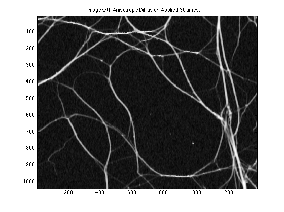

Contents
Anisotropic Diffusion Homework
Ashutosh Priyadarshy
Digital Image Processing
Spring 2011
Input Image: 'very+little+degeneration.jpg'
% Close any previous windows and clear the workspace. close all; clear all; % Read in the image. Scale it and noise it up. i = imread('very+little+degeneration.jpg'); i = double(i(:,:,2))/255; j = imnoise(i,'gaussian',0.,.03); % Show the noisy image that will be processed with Anisotropic Diffusion. imagesc(j); colormap gray; title('Very Little Degeneration with AWGN');
Begin Anisotropic Diffusion Algorithm
% Set the number of updates of the AD Image. for iter = 1:30
Compute Gradient Images
North Gradient
north = zeros(size(j,1), size(j,2));
north(2:end, 1:end) = j(1:end-1, 1:end) ;
north(1, :) = j(1, :);
del_j_north = north - j;
% South Gradient.
south = zeros(size(j,1), size(j,2));
south(1:end-1, 1:end) = j(2:end, 1:end) ;
south(end, :) = j(end, :);
del_j_south = south - j;
% West Gradient.
west = zeros(size(j,1), size(j,2));
west(:, 2:end) = j(:, 1:end-1) ;
west(:, 1) = j(:, 1);
del_j_west = west - j;
% East Gradient.
east = zeros(size(j,1), size(j,2));
east(:, 1:end-1) = j(:, 2:end);
east(:, end) = j(:, end);
del_j_east = east - j;
% Calculate Diffusion Coefficients.
k = 1/4;
cn = exp(-(del_j_north./k).^2);
cs = exp(-(del_j_south./k).^2);
ce = exp(-(del_j_east./k).^2);
cw = exp(-(del_j_west./k).^2);
% Update the image on this iteration.
j_plus_1 = j + 0.25.*(cn.*del_j_north + cs.*del_j_south + east.*del_j_east + west.*del_j_west);
% Set j as updated one, make it clear what's happening
% This wastes memory...
j = j_plus_1;
end
% Display the results.
figure(2); imagesc(j); colormap gray
title(['Image with Anisotropic Diffusion Applied ' num2str(iter) ' times.']);
